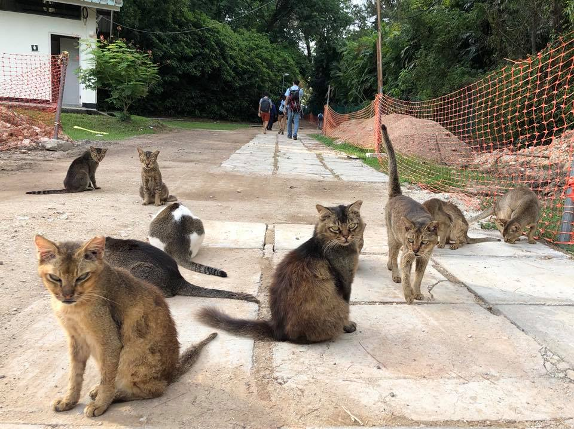

The Hidden Gem
Gardens by the Bay, Marina Barrage, Singapore Botanic Gardens, these places allows you to carry out many outdoor activities such as sightseeing, picnics or flying a kite.
But these popular places are always crowded and can get boring after a few visits hence this hidden gem located off mainland Singapore can provide you with that change in pace from the city life and new adventures.
Saint John’s Island is located close to the south of the mainland Singapore.
It used to be a quarantine site for immigrants who contracted cholera, beri-beri and leprosy.
It also had a rehabilitation centre for drug abusers and house political prisoners.
However today, it is a popular offshore island destination for many outdoor activities for those who appreciates nature and craves for a change of scenery from tall skyscrapers to tall trees and the island’s cats.

How To Get There
Head Down to Marina South Pier (closest MRT station is Marina South Pier Mrt) and purchase your ferry tickets from Marina South Ferries located near the main entrance of the pier. You can check the ticket pricing and bookings here.

Breathe In The Nature
Saint John’s Island is a haven for nature and wildlife, popular for its coral reefs and its island cats.
You take a guided nature trail around the island and explore the fresh scenery that nature has to offer there without a single skyscraper in sight.
You can take the intertidal walks here guided by Lee Kong Chian Natural History Museum (LKCNHM) here .
Special Features
Saint John’s Island National Marine Laboratory managed by National University of Singapore also offers public visits to the institute to create awareness about the importance of marine science research for Singapore’s strategic national needs for the future.
They also organise visits to the institution in line with their public education programme for marine sciences and also provide volunteering experiences in the field. You can find more information here .
You can also visit their facilities through bookings here .
Outdoor Activities
Saint John’s Island provides plenty of space and environment for many family-friendly outdoor activities.
List of Activities you can do:
- Spotting the island cats
- Fishing
- Overnight stay
- Picnic
- Heading over to Lazarus Island
You can spot the island cats rooming around the island and if you explore enough, you can come across their feeding place which is where most cats loiter around. When you alight the ferry at Saint John's Island's ferry port, you will be greeted with one of the island's fattest cat lounging on a bench on the bridge walkway.

You can also bring along your fishing buddies and fish on the island. The potential fishes you can catch are the Baramundi, Golden Snapper, bream, grouper and sicklefish.
If you would like to stay on the island longer, an option to do so is available via lodging at Saint John's Island Lodge. There are different types of lodging that have their own special features and amenities to accomodate you throughout your stay comfortably. The rates for the period of stay differs for each type of lodging. You can choose from Eagle (a former bungalow), Turtle, Dolphin and Otter.
The picture above shows the amenities available such as cooking pots, plates and cooker.
The picture above is one of the lodging places (Eagle).
You can visit this website for more information.
You can stroll along Lazarus sandy beach and sunbathe under the sun while you soak in the calming seawater. Lazarus Island is connected to Saint John's Island through a causeway making it easily accessible. You can enjoy some outdoor activities there such as kite-flying, picnics and swimming.
You can find more information about Lazarus Island here

The image above shows the location of both Saint John's Island and Lazarus Island.
Book your ferry tickets at the entrance of the Marina South Pier and the nearest MRT is Marina South Pier MRT.

Marina South Pier is located at a walking distance from the MRT.
Visit the Ferry Services Here:
Singapore Island Cruise & Ferry Services Pte Ltd,
31 Marina Coastal Dr,
#01-04, Singapore 018988
contact us at: +65 6534 9339
visit us at www.islandcruise.com.sg